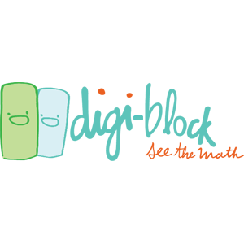

Spruced up some HTML email templates with back-end Java work to boot!
I had an absolute blast developing browser-based educational games at BrainPop.

Created an online tool to show off Digi-Blocks' amazing math manipulatives.
TA'd multiple computer science classes including Intro to A.I.
Helped build a front-end for creating GPS-enabled smart-phone tours.

Interned at The Education Arcade designing and developing educational games.